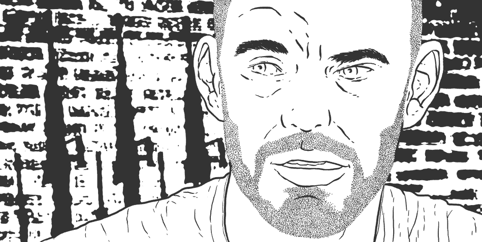
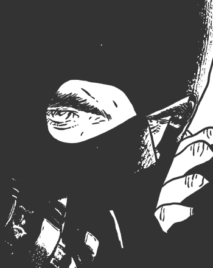

Die Stadt Dortmund tief im Ruhrgebiet hat eine der vitalsten Neonazi-Szenen Deutschlands. Die Gewalttäter haben hier Familien aus ihren Häusern vertrieben. Sie haben im Laufe der Jahre mehrere Menschen umgebracht. Und heute ziehen sie mit Fackeln vor Flüchtlingsheime und schicken Journalisten Todesanzeigen. Wir sind ihren Spuren gefolgt.
Im Jahr 2000 erschoss ein 31-jähriger Neonazi bei einer Verkehrskontrolle drei Polizisten in Dortmund. Nicht weit entfernt wurde der Mörder kurze Zeit später tot aufgefunden. In der rechtsradikalen Szene Dortmunds tauchten anschließend Flugblätter auf. Darauf stand: „3:1 für Deutschland.“
Ende März 2006 gab es einen Brandanschlag auf ein türkisches Bildungszentrum. Der Anschlag wurde nie aufgeklärt. Das Zentrum stand auf der Anschlagsliste des NSU, die Jahre später in den Trümmern der Zwickauer Wohnung des rechtsradikalen Terrortrios Uwe Mundlos, Uwe Böhnhardt und Beate Zschäpe, gefunden wurde. Das Zentrum hatten die Terroristen des „Nationalsozialistischen Untergrund“ (NSU) mit einem Stern markiert.
Wenige Tage nach dem Anschlag auf das Bildungszentrum überfielen Neonazis eine Demonstration, auf der an den Punker Thomas “Schmuddel” Schulz erinnert wurde. Thomas Schulz war von einem Neonazi in der Dortmunder S-Bahn erstochen worden.
Am 4. April 2006 dann ermordeten die NSU-Täter Mundlos und Böhnhardt den Kioskbesitzer Mehmet Kubasik in der Nähe eines bekannten Dortmunder Neonazi-Treffpunktes. Ein mit den Ermittlungen betrauter Verfassungsschützer wertete die Tat als Versuch des NSU, ein Terrorfanal in der Dortmunder Neonazi-Szene zu setzen.
Ich habe mich gefragt, für wen sollte dieses Fanal sein. Warum fahren Nazis aus Thüringen nach Dortmund um einen Türken zu töten.
Die Suche nach einer Antwort auf diese Frage hat Jahre gedauert. Heute bin ich sicher, es gibt viele Gruppen wie den NSU. Vielleicht nicht so tödlich. Aber genauso zur Gewalt bereit.
In der grafischen Reportage „Weisse Wölfe“ zeichne ich gemeinsam mit Jan Feindt ihren Weg nach. Wir folgen einem Jugendlichen, der immer tiefer in eine Welt aus Hass und Rassenwahn abtaucht.
WEISSE WÖLFE als Buch und im Netz
Wir wollen nun möglichst viele Menschen mit dieser Reportage erreichen. Deswegen stellen wir sie frei ins Netz.
Weisse Wölfe: Eine grafische Reportage über rechten Terror.
online lesen als Buch bestellenEigentlich wollten wir die Reportage über die internationalen Verflechtungen der Nazibanden zusammen mit einer großen deutschen Tageszeitung veröffentlichen. Doch deren Juristen hatten unter anderem Angst, die Zitate aus den Turner-Tagebüchern, die wir veröffentlichen, würden die Reportage angreifbar machen. Die Turner-Tagebücher sind seit Jahren in Deutschland verboten.
Wir veröffentlichen unsere grafische Reportage trotzdem.
Wir denken, es macht keinen Sinn, den Kopf in den Sand zu stecken und zu glauben, das Böse verschwindet, wenn man es lange genug ignoriert. Wir müssen uns dem Horror stellen, um ihn zu bekämpfen.
In unserer grafischen Reportage setzen wir uns mit den Inhalten der Turner-Tagebücher kritisch und intellektuell, künstlerisch und erzählerisch auseinander. Wir beschreiben – auch auf einer emotionalen Ebene – ihre Wucht und ihre Wirkung. Sie sind das ideologische Fundament des rechten Rassenterrorismus in Europa. Wir glauben: Wir können dieses Fundament nur enthüllen, wenn wir einige, wenige Absätze aus den verbotenen Tagebüchern auch zitieren – ohne Angst vor Verfolgung.
Wir hätten versuchen können, andere Zeitungen und Internetpublikationen zu überreden, die grafische Reportage nach der ersten Absage zu drucken. Wir glauben aber, dass wir immer wieder ähnliche Debatten mit Anwälten bekommen hätten. Aus diesem Grund stellen wir unsere grafische Reportage frei ins Netz.
Wer die Geschichte lieber gedruckt lesen will, kann sie in unserem Online-Shop bestellen.
Die Szene
Der wichtigste Zeuge unserer Reportage ist Albert S. (Name geändert). Er gehört zu den Gründern einer so genannten Combat 18-Zelle in Dortmund. So nennt sich der militante Arm des Neonazi-Netzwerkes „Blood & Honour“ selbst. Die Zelle wollte Anschläge verüben, ihre Mitglieder sahen sich selbst als politische Soldaten. „Wir wollten einen Rassenkrieg, mit allen Mitteln“, sagt Albert S.
Die Dortmunder Szene ist tief mit der internationalen Nazi-Szene vernetzt. Belgische und flämische Neonazis kauften und verkauften in Dortmund Waffen und Sprengstoff. Später wechselte mindestens ein Mitglied der Dortmunder Combat 18 Zelle in eine belgische Terrorgruppe, die Anschläge unter anderem auf die belgische Regierung plante. Die deutsch-belgische Truppe wurde von einem belgischen Offizier in einer belgischen Kaserne trainiert.
-

-
Der Dortmunder Rechtsextremist Albert S.* berichtet...
-
-

-
...dass eine Terrorgruppe der Nazis in Belgien von Thomas Boutens, genannt Lupus, in der Kaserne Leopolsburg trainiert wurde.
-
-
-
Die Gruppe übte Geiselnahmen und Überfälle.
-
Thomas Boutens war Offizier der belgischen Armee.
-
-
-
Albert S. gehörte zu der Gruppe.
-
Drähte zum NSU-Terror
Auch zum NSU gab es immer wieder aus Dortmund Verbindungen. In einer abgefangenen SMS des NSU-Sprengstoffbeschaffers Thomas S. an einen Kontaktmann in Chemnitz heißt es über den Großraum Dortmund: „Bin gestern Nachmittag mal hier ein Stück gelaufen, nur Türken, da fällt dir nichts mehr ein.“ Die Antwort aus Ostdeutschland, ebenfalls per SMS: „Isses so schlimm mit den Kanaken? Da weiß man ja, wo nächstes Mal aufgeräumt werden muss.“ Ein anderer NSU-Helfer schrieb zurück: „88 Grüße aus der Wolfsschanze.“
In den Unterlagen gewaltbereiter Nazis aus Dortmund wird Thomas S. Ende der 90er-Jahre als Kontaktmann zu Kampfgenossen im Osten geführt. Das war der Zeitraum, in dem sich Uwe Mundlos, Uwe Böhnhardt und Beate Zschäpe radikalisierten und vermutlich den NSU gründeten.
Heute ist einer der Männer aus dem Dortmunder Untergrund Robin S. Brieffreund von Beate Zschäpe. Sie schreiben sich Liebesbriefe in den Knast. Robin S. hatte wie Mundlos und Bönhardt einen Migranten niedergeschossen. In einem Dortmunder Supermarkt. Angeblich war es ein Raubüberfall.
-

-
Bei den Übungen in der Kaserne wurde....
-
-
-
der Einsatz von modernen Waffen geübt.
-

Die Ideologie
Einer der wichtigsten ideologischen Impulse für die militante Neonazi-Bewegung kommt aus den so genannten Turner-Tagebüchern, einem utopischen Roman, der 1970er Jahre in den USA erschien. Als Autor wird das Pseudonym Andrew Macdonald genannt.
Der in Deutschland verbotene Roman propagiert rassistische und antisemitische Ideen. Militärisch operierende Zellen verbreiten Terror in Kleinstgruppen im Untergrund nach Art des „Führerlosen Widerstandes“: Jeder ist für sich selbst verantwortlich, geeint nur durch eine gemeinsame Ideologie. Die Zellen verüben Anschläge auf normale Menschen, deren Rasse oder Religion ihnen nicht passt und lösen so am Ende einen weltweiten Rassenkrieg aus, in dessen Verlauf ganze Völker vernichtet werden.
Das amerikanische FBI geht davon aus, dass die Turner-Tagebücher den Urheber des Bombenanschlags auf das Murrah Federal Building in Oklahoma City zu seiner Tat motivierte. 168 Menschen starben. Auch der Norwegische Massenmörder Anders Breivik bezog sich in seiner Stellungnahme auf die Turner-Tagebücher. Er tötete 77 Menschen.
Im Umfeld des „Nationalsozialistischen Untergrund“ (NSU) wurden die Turner-Tagebücher auf beschlagnahmten Rechner sichergestellt. Die Beschreibungen des Untergrundkampfes im Roman gleichen der Lebenswelt des NSU teilweise bis ins Detail: eine Art Blaupause.
Auch in Dortmund sind die Turner-Tagebücher in Nazi-Kreisen bekannt. Der Dortmunder Combat 18-Gruppe galten sie als Handlungskonzept, als Blaupause für den Kampf als „politische Soldaten“ im Untergrund.
Es ist diese gemeinsame Ideologie, die den NSU mit den anderen gewalttätigen Nazigruppen in Deutschland verbindet.
-
-
Albert S. berichtet wie er gemeinsam mit einem Führer der belgischen Nazi-Gruppe...
-
-

-
den Laden eines Migranten überfallen hat.
-
-

-
Sie wollten ihren Kampf mit dem Überfall finanzieren.
-
-
-
So wie es in den Turner-Tagebüchern beschrieben wird.
-
-
-
Albert S. sagt, der Führer der belgischen Gruppe habe ihn...
-
-
-
aufgefordert auf den Migranten zu schießen.
-
-

-
Albert S. sagt, er habe nicht abdrücken können.
-
Keine Aufklärung im Prozess
Wir glauben nicht, dass die Ideologie der Nazi-Gewalt im NSU-Prozess in München aufgeklärt wird. Dort wird zu den konkreten Einzeltaten des NSU ermittelt. Nicht mehr – nicht weniger. Die Richter interessiert, wer den NSU-Terroristen konkret bei der Einzeltat in Dortmund geholfen hat. Wenn sie urteilen wollen, müssen sie diese direkte Tatverbindung nachweisen – sonst gibt es für die Richter nichts aufzuklären. Für eine direkte Beteiligung einzelner Gewalttäter aus Dortmund an den Morden des NSU liegen keine Beweise vor.
Es bleibt alleine der öffentliche Diskurs, die Hintergründe des Terrors zu enthüllen und die Gefahren der gewaltbereiten Nazis aufzuzeigen. Und dieser Diskurs muss in aller Härte geführt werden. Wir müssen die Wahrheit erkennen, um über sie reden zu können. Allen voran die Politik muss das akzeptieren.
-
-
Dortmunds SPD-Oberbürgermeister Ulrich Sierau hat lange bestritten, dass seine Stadt eine starke Nazi-Szene hat.
-
Er sagte, die häufigen Naziaufmärsche würden in Dortmund nur "wegen der verkehrsgünstigen Lage“ stattfinden.
-
CORRECT!V unterstützen
Wir bei CORRECT!V bleiben jahrelang an Themen dran, deshalb hilft uns vor allem eine kontinuierliche Unterstützung. Als Mitglied sichern Sie unsere Unabhängigkeit. Je mehr Mitglieder wir haben, desto stärker wird CORRECT!V.
Im Gegenzug werden Sie Teil unseres Teams. Sie bekommen zusätzliche Hintergründe, kostenlose Bücher und sind zu unseren Veranstaltungen eingeladen. Außerdem helfen wir, bei Ihnen vor Ort Transparenz zu schaffen. Mitgliedsbeiträge an uns sind übrigens von der Steuer absetzbar.
Spenden Mitglied werdenBleib auf dem Laufenden
Wir schicken dir in unregelmäßigen Abständen Informationen zu unseren Recherchen zum Thema Rechtsradikalismus.